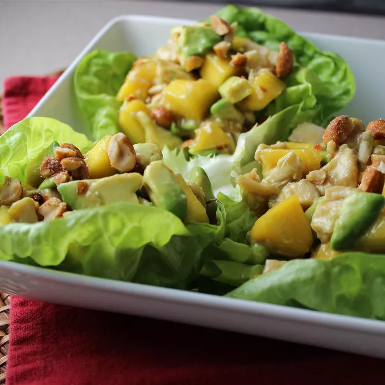

Chicken, Avocado, and Mango Salad

Description
This is a colorful and very tasty mix of chicken, mangos, and avocados in a spicy lime dressing.
Ingredients
- 2 tablespoons brown sugar
- 1/4 cup of water
- 1 /3 cup lime juice
- 2 cups of shredded cooked chicken
- 2 meduim mangos - seeded, peeled and diced
- 2 avocados - pitted, peeld and diced
- 10 ounce package spring mixed lettuce
Steps
- In a saucepan over medium-high heat, stir together the brown sugar and water. Bring to a boil, then pour into a medium bowl. Stir in the garlic chili sauce and lime juice. Set the dressing aside.
- In a large bowl, toss together the chicken, mangos and avocados. Arrange the spring salad mix on serving plates, then top with a few spoonfuls of the chicken mixture. Pour dressing over the top